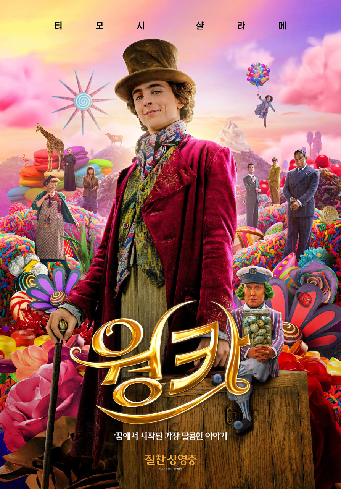
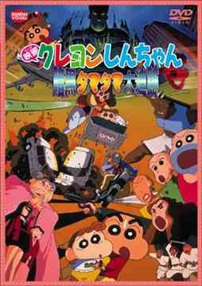

쌓인 기록 52편
| Release | 2018.02.08 |
|---|---|
| Runtime | 104분 |
| Age Rating | 전체 관람가 |
| Director | 폴 킹 |
| Cast | 벤 위쇼, 휴 그랜트, 샐리 호킨스, 휴 보네빌, 사무엘 조슬린, 매들린 해리스, 줄리 월터스 |
| Date | |
|---|---|
| Time | |
| Theater | |
| Screen |

| Release | 2024.01.31 |
|---|---|
| Runtime | 116분 |
| Age Rating | 전체 관람가 |
| Director | 폴 킹 |
| Cast | 티모시 샬라메, 칼라 레인, 올리비아 콜맨, 톰 데이비스, 휴 그랜트, 샐리 호킨스 |
| Date | 2024.02.14 |
|---|---|
| Time | 13:40 ~ 15:46 |
| Theater | CGV (소풍) |
| Screen | 5관 |

| Release | 1997.00.00 |
|---|---|
| Runtime | 96분 |
| Age Rating | 전체 관람가 |
| Director | 하라 케이이치 |
| Cast | 야지마 아키코, 나라하시 미키, 후지와라 케이지, 고리 다이스케, 시오자와 카네토, 오오타키 신야 |
| Date | |
|---|---|
| Time | |
| Theater | |
| Screen |